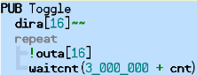

Now for an explanation of the source code:

PUB Toggle
dira[16]~~
repeat
!outa[16]
waitcnt(3_000_000 + cnt)
The first line, PUB Toggle, declares that we're creating a “public” method called “Toggle.” A method is the object-oriented term for “procedure” or “routine.” We chose the name Toggle simply because it is descriptive of what the method does and we knew it is a unique symbol; it must be a unique symbol and not a reserved word. We'll describe the term PUB, “public,” in more detail later, but it’s important to note that every object must contain at least one public (PUB) method.
The rest of the code is logically part of the Toggle method. We indented each line by two spaces from the PUB's column to make that more clear; this indenting isn’t required but is a good habit for clarity.
The first line of the Toggle method (second line of our example), dira[16]~~, sets the direction of I/O pin 16 to output. The DIRA symbol is the direction register for I/O pins P0 through P31; clearing or setting bits within it changes the corresponding I/O pin’s direction to input or output.
The [16] following dira indicates we want to access only the direction register’s bit 16; the one that corresponds to I/O pin 16. Finally, the ~~ is the Post-Set operator that causes direction register bit 16 to be set to high (1); which makes I/O pin 16’s direction an output. The Post-Set operator is a shorthand way of saying something like dira[16] := 1 which may look familiar to you from other languages.
The next line, repeat, creates a loop consisting of the two lines of code below it. This REPEAT loop runs infinitely, toggling P16, waiting ¼ second, toggling P16, waiting ¼ second, etc.
The next line, !outa[16], toggles the state of I/O pin 16 between high (VDD) and low (VSS). The OUTA symbol is the output state register for I/O pins P0 through P31. The [16] in !outa[16] indicates we want to access only the output register’s bit 16, the one that corresponds to I/O pin 16. The ! at the start of this statement is the Bitwise Not operator; it toggles the state of all bits specified to its right (the bit corresponding to I/O pin 16 in this case).
The last line, waitcnt(3_000_000 + cnt), causes a delay of 3 million clock cycles. WAITCNT means “Wait for System Counter.” The cnt symbol is the System Counter register; CNT returns the current value of the System Counter, so this line means “wait for System Counter to equal 3 million plus its current value.” In this code example, we didn't specify any clock settings for the Propeller chip, so by default it runs with its internal fast clock (about 12 MHz) meaning a delay of 3 million clock cycles is about ¼ second.
Remember how we said to pay close attention to each line’s indenting? Here is where indenting is required: the Spin language uses levels of indention on lines following conditional or loop commands (IF, CASE, REPEAT, etc.) to determine which lines belong to that structure. In this case, since the two lines following repeat are indented to the right by at least one space beyond repeat’s column, those two lines are considered to be a part of the repeat loop. If you have trouble recognizing these structural groupings, the Propeller Tool can make them more visible on-screen through the Block-Group Indicators feature. Use Ctrl+I to toggle this feature on or off. Here’s our example code with these indicators visible.

Block-Group Indicators
Ctrl+I toggles them on and off.
If you haven't saved this example object yet, you may do so by pressing Ctrl+S (or selecting File → Save from the menu). You may save it in a folder of your choosing but make sure to save it with the filename “Output.spin” since some exercises in later lessons rely on it.
Propeller Help Version 1.2
Copyright © Parallax Inc., dba Parallax Semiconductor
6/17/2011